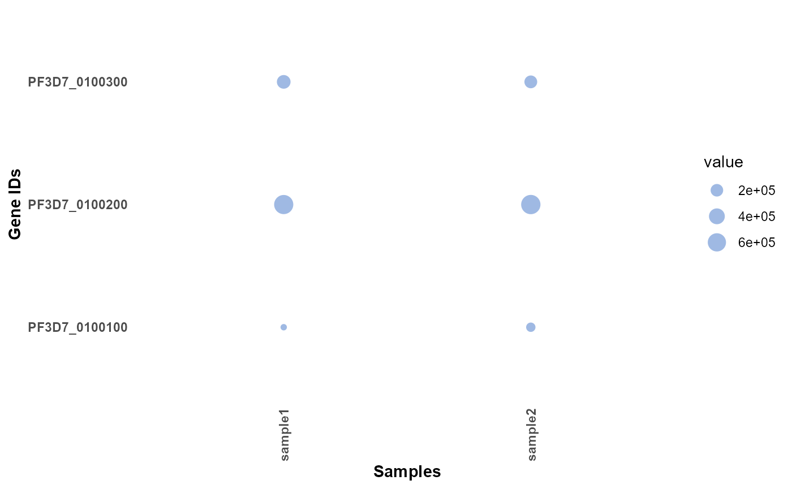
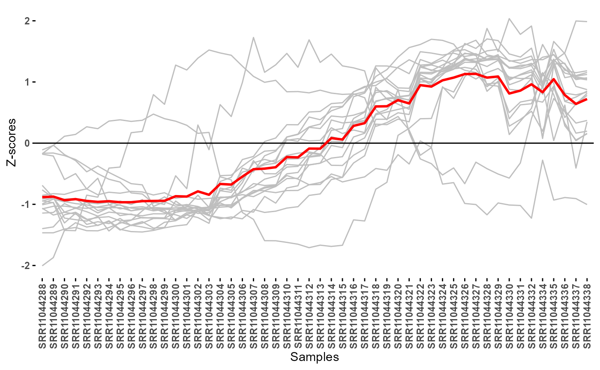
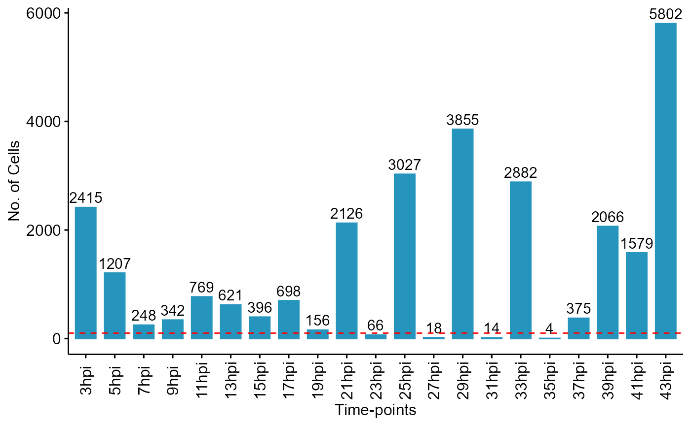
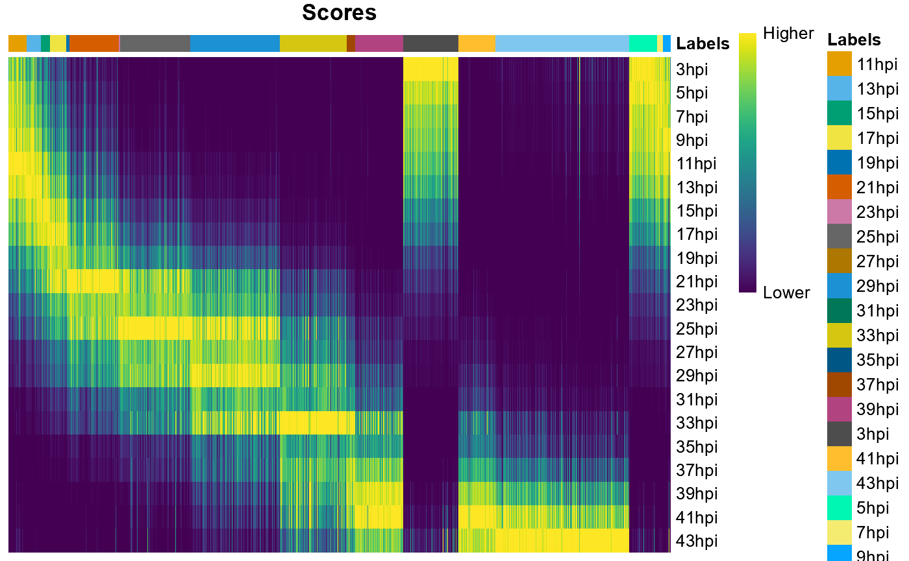
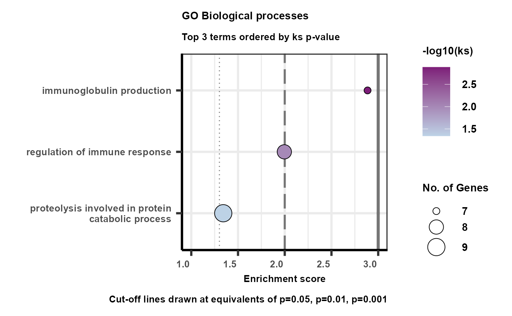
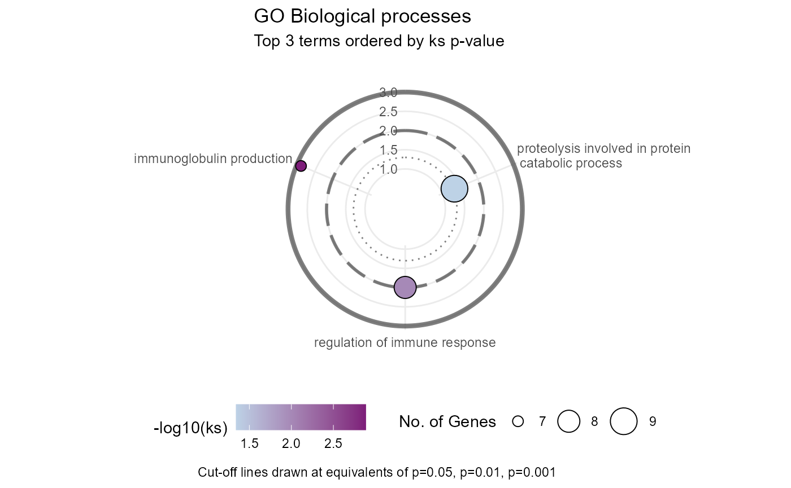

Other useful functions
Rohit Satyam
King Abdullah University of Science & Technology, Saudi ArabiaAlberto Maillo
King Abdullah University of Science & Technology, Saudi ArabiaDavid Gomez-Cabrero
King Abdullah University of Science & Technology, Saudi ArabiaArnab Pain
King Abdullah University of Science & Technology, Saudi Arabia22 August, 2025
Miscellaneous_function.RmdAbstract
This section covers the capability of plasmoRUtils to carry out other mundane bioinformatics tasks.
Introduction
Other than search functions, the plasmoRUtils package offers various other functions that are routinely needed when performing bioinformatics analysis. Their usage is discussed below.
# Load package and some other useful packages by using
suppressPackageStartupMessages(
suppressWarnings({
library(plasmoRUtils)
library(dplyr)
library(plyr)
library(tibble)}))Making OrgDb and TxDb objects
For non-model organism, using R packages such as clusterProfiler for enrichment analysis requires org.db packages. Unfortunately, this requires ability to understand and use AnnotationDbi package. To make development of such packages quickly, we wrote a wrapper function that instantly creates a TAR file that can be used and shared by the user in no time.
## List organism you are interested in making org.db package from VEuPathDB.
## Use the links from PlasmoDB directly or provide locally saved GFF and GAF files.
## Get taxonomy ID using listVeupathdb(c("primary_key","ncbi_tax_id"))
easymakeOrgdb(
gff =
"https://plasmodb.org/common/downloads/release-68/Pfalciparum3D7/gff/data/PlasmoDB-68_Pfalciparum3D7.gff",
gaf =
"https://plasmodb.org/common/downloads/release-68/Pfalciparum3D7/gaf/PlasmoDB-68_Pfalciparum3D7_Curated_GO.gaf.gz",
out.dir = ".",
taxid = 36329,
genus = "Plasmodium",
sp = "falciparum3D7",
version = 0.1,
verbose = FALSE,
maintainer = "John doe <johndoe@gmail.com>" ## Your name if you are maintaining it.
)
## Once the package is ready, one can use clusterProfiler as follows
library(clusterProfiler)
library(org.Pfalciparum3D7.eg.db)
ego <- enrichGO(gene = genes,
universe = bkg_genes,
OrgDb = org.Pfalciparum3D7.eg.db,
keyType = "GID",
ont = "BP",
minGSSize=3,
pAdjustMethod = "BH",
pvalueCutoff = 0.05,
qvalueCutoff = 0.05,
readable = FALSE)The function above will create an org.db tar file which can be installed and loaded to be used with clusterProfiler.
Similarly, if users want to make TxDb object in R to use other R
packages such as gDNAx used
to access the genomic DNA contamination, they can do so easily using
easyTxDbmaker() function.
txdb<-easyTxDbmaker(
gff="https://toxodb.org/common/downloads/release-68/TgondiiME49/gff/data/ToxoDB-68_TgondiiME49.gff",
fasta="https://toxodb.org/common/downloads/release-68/TgondiiME49/fasta/data/ToxoDB-68_TgondiiME49_Genome.fasta",
abbr="TgondiiME49",
taxid=508771,org = "Toxoplasma gondii ME49",
db = "ToxoDB release 68")Other easy functions
Users are also provided with easy functions which are wrapper functions around routinely used to analyze bioinformatics data.
TPM normalization and visualization
In this section we will see how we can calculate effective gene lengths from a GFF file followed by TPM normalization and visualize the resulting normalized matrix. These functions are provided since most of the RNASeq data present on VEuPathDb is TPM normalized and therefore make it easy to plot the database procured values alongside your own samples.
# To calculate the effective length of the genes you can use the following function
baseurl <- "https://plasmodb.org/common/downloads/release-68/"
getEffLen(paste0(baseurl,
"Pfalciparum3D7/gff/data/PlasmoDB-68_Pfalciparum3D7.gff")) %>% head()
#> # A tibble: 6 × 2
#> GeneID Length
#> <chr> <dbl>
#> 1 PF3D7_0100100 6492
#> 2 PF3D7_0100200 996
#> 3 PF3D7_0100300 3984
#> 4 PF3D7_0100400 1119
#> 5 PF3D7_0100500 112
#> 6 PF3D7_0100600 1080The above function returns a dataframe which can be fed to the
easyTPM() function alongside the count matrix. The function
also adds the effective length as a column at the end so that people can
find it easy to convert the values to the raw counts. This is also
helpful since the exon-intron boundaries are always evolving as the new
data-sets become available.
library(ggplot2)
## Generating dummy effective length for quick demonstration
gene_info <- data.frame(GeneID = c("PF3D7_0100100", "PF3D7_0100200", "PF3D7_0100300"), Length = c(6492, 996, 3984))
## Making a dummy count matrix
count_matrix <- matrix(c(10, 20, 30, 40, 50, 60),
nrow = 3, ncol = 2,
dimnames = list(c("PF3D7_0100100", "PF3D7_0100200", "PF3D7_0100300"), c("sample1", "sample2"))
)
## TPM normalization
test <- easyTPM(count_matrix, gene_info) %>% rownames_to_column(var = "GeneID")
## TPM visualization as a bubble plot
df <- reshape2::melt(test[,-ncol(test)],na.rm = T)
easyExpPlot(df,x="variable",y="GeneID",value="value", type = "bubble")+labs(x="Samples",y="Gene IDs")
You can also plot normalized expression data as line plot if you have cluster of genes with similar pattern of expression. To demonstrate this we will use a subset of genes from (Subudhi et al. 2020) time series dataset. We will perform TPM normalization, followed by log transformation and eventually use the Z-scores for visualization.
data("subudhi2020")
count_matrix <- subudhi2020@assays@data$counts
baseurl <- "https://plasmodb.org/common/downloads/release-68/"
gene_info <- getEffLen(paste0(baseurl,"Pfalciparum3D7/gff/data/PlasmoDB-68_Pfalciparum3D7.gff"))
normalised <- easyTPM(count_matrix, gene_info)
## Since normalized matrix have effective gene length column at the end
logTransformed = log2(normalised[,-ncol(normalised)] + 1)
## Get z-scores
z.mat <- t(scale(t(logTransformed), scale=TRUE, center=TRUE)) %>% as.data.frame() %>% rownames_to_column(var = "GeneID")
## Subsetting few genes of interest
gois <- c("PF3D7_1476300","PF3D7_0220800","PF3D7_0936200","PF3D7_0402200","PF3D7_1401600","PF3D7_0831600","PF3D7_0204100","PF3D7_1458300","PF3D7_0935800","PF3D7_0929400","PF3D7_1439000","PF3D7_0905400","PF3D7_1334600","PF3D7_1121300","PF3D7_0302500","PF3D7_1232800","PF3D7_0310400","PF3D7_1001600")
## Transforming data frame for visualisation
df <- z.mat %>%
subset(.,GeneID %in% gois) %>%
reshape2::melt(.,na.rm = T)
easyExpPlot(df,x="variable",y="value",value="GeneID")+
labs(y="Z-scores",x="Samples")
easyExpPlot() can be used to plot expression values
obtained from any kind of applied normalization and transformation.
Support for NOISeq readData function for non-model
organism
When using NOISeq for
QC, users are often required to provide various information alongside
count matrices. These information includes biotype, chromosome, gc
content, length of the features etc. These arguments are listed as
optional but are required by NOISeq
package for making QC plots. To enable users to get these information
from the same reference FASTA file and GFF file used by user for
alignment, we wrote easyNOISeqAnnot() function that enable
users to quickly get this information from GTF/GFF file and FASTA file
and return a data frame. These can be provided as a URL or as locally
stored files.
gene_info <- easyNOISeqAnnot(
gff="https://toxodb.org/common/downloads/release-68/EpraecoxHoughton/gff/data/ToxoDB-68_EpraecoxHoughton.gff",
fasta = "https://toxodb.org/common/downloads/release-68/EpraecoxHoughton/fasta/data/ToxoDB-68_EpraecoxHoughton_Genome.fasta")
gene_info %>% head()
#> gene_id gene_biotype gc
#> EPH_0000010 EPH_0000010 protein_coding 0.5329587
#> EPH_0000020 EPH_0000020 protein_coding 0.4712575
#> EPH_0000030 EPH_0000030 protein_coding 0.5618822
#> EPH_0000040 EPH_0000040 protein_coding 0.5624426
#> EPH_0000050 EPH_0000050 protein_coding 0.4910354
#> EPH_0000060 EPH_0000060 protein_coding 0.5811796
#> desc length
#> EPH_0000010 Helicase associated domain HA2 containing protein , related 6584
#> EPH_0000020 DNA polymerase alpha subunit, putative 5010
#> EPH_0000030 hypothetical protein 2529
#> EPH_0000040 hypothetical protein, conserved 6534
#> EPH_0000050 hypothetical protein, conserved 4462
#> EPH_0000060 hypothetical protein, conserved 1509
#> starts ends chr
#> EPH_0000010 2602 9185 HG688746
#> EPH_0000020 50573 55582 HG688746
#> EPH_0000030 101 2629 HG695046
#> EPH_0000040 19822 26355 HG697798
#> EPH_0000050 30217 34678 HG697798
#> EPH_0000060 36161 37669 HG697798You can now pass the data frame contents to
NOISeq::readData() function as follows.
Check synchronization of Bulk RNASeq samples using
easyLabelTransfer()
easyLabelTransfer() is a wrapper function written around
SingleR
SingleR() function to quickly use count matrices from Bulk/
Single cell Reference data sets to check synchronization (time point and
stage) of the Parasite Bulk RNASeq samples and can be used for QC
purposes.
Here, for demonstration purpose, we will use single cell RNASeq data from Malaria Cell Atlas and use (Subudhi et al. 2020) Bulk time-series dataset to transfer labels and see the distribution of the cells across different time points.
Other data sets provided with the package includes:
- Time course Microarray dataset from (Painter et al. 2018):
data("painter2018") - Time course Bulk RNASeq (Single-end) from (Toenhake et al. 2018):
data("toenhake2018") - Time course Bulk RNASeq (Paired-end) from (Kucharski et al. 2020):
data("kucharski2020") - Reanalyzed scRNAseq of T. gondii ME49 data from (Lou et al.
2024):
data("gubbels2024") - Reanalyzed scRNAseq of T. gondii ME49 data from (Xue et al.
2020):
data("boothroyd2020") - Reanalyzed Bulk RNASeq (Paired-end) from (Wichers et al. 2019):
data("wichers2019") - Reanalyzed scRNAseq of *T. gondii* data from (Lou et al.
2024):
data("gubbels2024") - Reanalyzed scRNAseq of *T. gondii* data from (Xue et al.
2020):
data("boothroyd2020") - Reanalyzed Bulk RNASeq (Paired -End) from (Wichers et al. 2019):
data("wichers2019")
Next, Malaria cell atlas (MCA) is a database comprising of single cell data sets and can be accessed using the following functions.
-
listMCA()function enables you to filter and list scRNASeq data sets for which data download links are available. User can use this function to view a table to metadata about the dataset or download these datasets recursively rather than manually downloading single dataset at a time. -
easyMCA()enables users to import the count matrix and metadata directly in the R environment directly. Written mainly for pipeline development.
Now, lets use the function enlisted above alongside
easyLabelTransfer() as shown below.
Note: The output obtained from
easyLabelTransfer()function is a DFrame object and can be fed to other SingleR functions for visual purposes.
library(SingleR)
set.seed(12458)
## Fetching the URL
mcalist <- listMCA()
data("subudhi2020") ## reference dataset
subudhi2020 <- subudhi2020[,1:42] ## Skipping samples after 43 Hpi since they highly correlate with 43hpi itself.
## Using this reference set
url <- "https://www.malariacellatlas.org/downloads/pf-ch10x-set4-biorxiv.zip"
raw_counts <- easyMCA(url,type = "raw")
rownames(raw_counts) <- gsub("-","_",rownames(raw_counts))
meta <- easyMCA(url,type="data")
## Retaining only Asexual stage cells and Lab isolates.
meta <- subset(meta, meta$STAGE_LR %in% c("ring","trophozoite","schizont") & DAY != "Field")
raw_counts <- raw_counts[,rownames(meta)]
## Filtering away field isolates and sexual stage cells
labels <- easyLabelTransfer(queryCounts = raw_counts,
refCounts = subudhi2020@assays@data$counts, referenceMeta = subudhi2020@colData, labelCol = "timetag", isrefBulk = TRUE)
table(labels$pruned.labels)
#>
#> 11hpi 13hpi 15hpi 17hpi 19hpi 21hpi 23hpi 25hpi 27hpi 29hpi 31hpi 33hpi 35hpi
#> 762 615 396 698 155 2126 65 3027 18 3855 14 2882 3
#> 37hpi 39hpi 3hpi 41hpi 43hpi 5hpi 7hpi 9hpi
#> 375 2066 2361 1579 5727 1199 241 336
df <- labels$labels %>% table() %>% data.frame()
df$. <- factor(df$., levels = subudhi2020$timetag %>% unique())
ggpubr::ggbarplot(df,x=".",y="Freq", label = TRUE, color = "#2595be", fill = "#2595be")+
geom_hline(yintercept = 100,colour = "red", linetype=2 )+
labs(x="Time-points",y="No. of Cells")+
theme(axis.text.x = element_text(angle = 90, vjust = 0.5))
plotScoreHeatmap(labels,show_colnames = F,
show.pruned = F,
cluster_cols = F,
cluster_rows = FALSE,
rows.order=unique(subudhi2020$timetag))
You can see that cells from some time points are underrepresented in our Malaria Cell Atlas.
GO Enrichment using easytopGO()
VEuPathDB constituent database allow users to perform GO Enrichment analysis. However, there is no option to set the background genes and by default all the genes in the are used. This is not an ideal approach. Moreover, since Gene Ontologies are curated using different pipelines by different enrichment providers, the results might differ just based on source of Ontologies. Similarly the Ontology data might not be available in other databases such as BioMart and you would like to use custom GAF file.
Users of parasite domain might wish to use GAF files provided by
VEuPathDB constituent database and of specific genome assembly as per
their hypothesis. To enable users to do that, GO enrichment analysis can
be performed easily and quickly using our easytopGO()
wrapper function. This function requires users to provide a named
numeric vector, where names are Ensembl Gene IDs and numeric vector
could be adjusted p-values. Users can also supply genes to be used as
background using bkggset argument. Finally users can use
gaf argument to supply .gaf file obtained from VEuPathDBs
constituent database of interest.
For well known organisms, Biomart Ontologies can also be used. In
such case user has to provide mart argument and figure out
key for emsembl gene IDs . However, many times the parasite assemblies
used as reference by Ensembl might not match with parasite assembly used
by VEuPathDB. In such cases there might be mismatches between gene IDs
(see one such issue here).
You can also change category argument to specify which
GO category you want to test enrichment for. Since for most of the
parasites, sub-cellular localization and Molecular function information
is sparingly available, “BP” has been set as the default.
Finally, you can also use ORA results obtained from VEuPathDBs as
input to easytopGO().
# Making a numeric vector of padjusted values
gois <- c("PF3D7_0102200","PF3D7_0207400","PF3D7_0207500","PF3D7_0207600","PF3D7_0207700","PF3D7_0207800","PF3D7_0207900","PF3D7_0208000","PF3D7_0404700","PF3D7_0501500","PF3D7_0502400","PF3D7_0618000","PF3D7_0731800","PF3D7_0930300","PF3D7_1116000","PF3D7_1247800","PF3D7_1334700")
p_values <- c(1.767929e-49,3.886063e-148,6.459285e-269,0.000000e+00,6.842121e-132,
5.282318e-178,1.140221e-224,1.625665e-100,6.177129e-08,1.484155e-03,2.789648e-10,2.300720e-12,7.450697e-30,3.417972e-89,4.846689e-73,1.207966e-11,4.173777e-51)
names(p_values) <- gois
## Using all genes captured as a background
background.gset <- rownames(subudhi2020@assays@data$counts)
baseurl <- "https://plasmodb.org/common/downloads/Current_Release/"
url<-paste0(baseurl,"Pfalciparum3D7/gaf/PlasmoDB-68_Pfalciparum3D7_GO.gaf.gz")
## Performing ORA
gores<-easytopGO(geneID = p_values,useGAF = TRUE,useBiomart = FALSE,gaf=url,
bkggset = background.gset, category = "BP", stats = "ks")
## Plotting the results.
goplt <- easyGOPlot(gores, title = "GO Biological processes", limit = 20, sortby = "ks")
goplt
## Making circular plot
goplt+theme_minimal()+coord_radial(inner.radius = 0.3, rotate.angle = TRUE,r_axis_inside = TRUE)+ylab("")+ggeasy::easy_legend_at("bottom")
The easyGOPlot() is adapted and modified version of what
has been provided by Kevin
Blighe on Biostars. You can use limit argument to limit
number of terms to be plotted.
Screening the Signal Peptides from PDBs
We also offer a convenient function, easyAF2Signal(), to
diagnose potential false-positive signal peptides using SignalP
predictions from the VEuPathDB database and AlphaFold2 structures, based
on an observational study conducted by (Sanaboyana and Elcock 2024). The
authors found that true N-terminal signal peptides (~24-24 amino acids)
are typically disengaged from the protein body and lack atomic contacts,
and AlphaFold2 attempts to model them in a similar way.
easyAF2Signal() is an R equivalent with slight
modifications to the Fortran code provided by the authors, which reports
additional information, such as the number of residues remaining after
pLDDT filtering.
We did this modification because, if all the signal peptide residues have low pLDDT scores and are filtered out, no residues will remain to calculate contacts with the protein body, resulting in zero contacts. This could give a false impression that the first 25 amino acids are signal peptides, but it cannot be confirmed, as the zero-contact observed is due to no residues remaining after filtering, not because the signal peptide was disengaged from the protein body.
easyAF2Signal("https://alphafold.ebi.ac.uk/files/AF-Q9TY95-F1-model_v4.pdb")
#> Name length_signalpeptide length_protein
#> 1 AF-Q9TY95-F1-model_v4 25 997
#> postbfacFiltered_signalP_res medianSignalP_bfac clevagesite_bfac
#> 1 0 35.36 32.71
#> postbfacFiltered_rest_res medianRest_bfac res_res_conts atm_atm_conts
#> 1 308 81.67 0 0In the example above, we see that signal peptide has low mean pLDDT
score and therefore there are no residues left post filtering of bad
quality residues leading to zero residue-residue counts
res_res_conts. Thus we can’t say for sure if the PDB in
hand have signal peptide or not.
Session Info
sessionInfo()
#> R version 4.4.1 (2024-06-14 ucrt)
#> Platform: x86_64-w64-mingw32/x64
#> Running under: Windows 11 x64 (build 26100)
#>
#> Matrix products: default
#>
#>
#> locale:
#> [1] LC_COLLATE=English_India.utf8 LC_CTYPE=English_India.utf8
#> [3] LC_MONETARY=English_India.utf8 LC_NUMERIC=C
#> [5] LC_TIME=English_India.utf8
#>
#> time zone: Asia/Riyadh
#> tzcode source: internal
#>
#> attached base packages:
#> [1] stats4 stats graphics grDevices utils datasets methods
#> [8] base
#>
#> other attached packages:
#> [1] topGO_2.56.0 SparseM_1.84-2
#> [3] GO.db_3.19.1 AnnotationDbi_1.66.0
#> [5] graph_1.82.0 SingleR_2.6.0
#> [7] SummarizedExperiment_1.34.0 Biobase_2.64.0
#> [9] GenomicRanges_1.56.2 GenomeInfoDb_1.40.1
#> [11] IRanges_2.38.1 S4Vectors_0.42.1
#> [13] BiocGenerics_0.50.0 MatrixGenerics_1.16.0
#> [15] matrixStats_1.5.0 ggplot2_3.5.2
#> [17] tibble_3.3.0 plyr_1.8.9
#> [19] dplyr_1.1.4 plasmoRUtils_1.1.0
#> [21] rlang_1.1.6 readr_2.1.5
#> [23] janitor_2.2.1 BiocStyle_2.32.1
#>
#> loaded via a namespace (and not attached):
#> [1] dichromat_2.0-0.1 vroom_1.6.5
#> [3] progress_1.2.3 vsn_3.72.0
#> [5] nnet_7.3-19 Biostrings_2.72.1
#> [7] vctrs_0.6.5 digest_0.6.37
#> [9] png_0.1-8 proxy_0.4-27
#> [11] MSnbase_2.30.1 parallelly_1.45.1
#> [13] MASS_7.3-61 pkgdown_2.1.3
#> [15] reshape2_1.4.4 foreach_1.5.2
#> [17] withr_3.0.2 xfun_0.52
#> [19] ggpubr_0.6.1 survival_3.8-3
#> [21] memoise_2.0.1 hexbin_1.28.5
#> [23] ggsci_3.2.0 mixtools_2.0.0.1
#> [25] systemfonts_1.2.3 ragg_1.4.0
#> [27] gtools_3.9.5 easyPubMed_2.13
#> [29] Formula_1.2-5 prettyunits_1.2.0
#> [31] KEGGREST_1.44.1 promises_1.3.3
#> [33] httr_1.4.7 rstatix_0.7.2
#> [35] restfulr_0.0.16 globals_0.18.0
#> [37] ps_1.9.1 rstudioapi_0.17.1
#> [39] UCSC.utils_1.0.0 generics_0.1.4
#> [41] processx_3.8.6 curl_6.4.0
#> [43] ncdf4_1.24 zlibbioc_1.50.0
#> [45] ScaledMatrix_1.12.0 randomForest_4.7-1.2
#> [47] bio3d_2.4-5 GenomeInfoDbData_1.2.12
#> [49] SparseArray_1.4.8 xtable_1.8-4
#> [51] stringr_1.5.1 desc_1.4.3
#> [53] doParallel_1.0.17 evaluate_1.0.4
#> [55] S4Arrays_1.4.1 BiocFileCache_2.12.0
#> [57] preprocessCore_1.66.0 hms_1.1.3
#> [59] bookdown_0.43 irlba_2.3.5.1
#> [61] colorspace_2.1-1 filelock_1.0.3
#> [63] magrittr_2.0.3 snakecase_0.11.1
#> [65] later_1.4.2 viridis_0.6.5
#> [67] lattice_0.22-6 MsCoreUtils_1.16.1
#> [69] future.apply_1.20.0 XML_3.99-0.18
#> [71] scuttle_1.14.0 class_7.3-22
#> [73] pillar_1.11.0 nlme_3.1-166
#> [75] iterators_1.0.14 compiler_4.4.1
#> [77] beachmat_2.20.0 stringi_1.8.7
#> [79] gower_1.0.2 dendextend_1.19.1
#> [81] lubridate_1.9.4 GenomicAlignments_1.40.0
#> [83] drawProteins_1.24.0 crayon_1.5.3
#> [85] abind_1.4-8 BiocIO_1.14.0
#> [87] bit_4.6.0 chromote_0.5.1
#> [89] pcaMethods_1.96.0 codetools_0.2-20
#> [91] textshaping_1.0.1 recipes_1.3.1
#> [93] BiocSingular_1.20.0 MLInterfaces_1.84.0
#> [95] bslib_0.9.0 e1071_1.7-16
#> [97] plotly_4.11.0 LaplacesDemon_16.1.6
#> [99] MultiAssayExperiment_1.30.3 splines_4.4.1
#> [101] Rcpp_1.1.0 dbplyr_2.5.0
#> [103] sparseMatrixStats_1.16.0 knitr_1.50
#> [105] blob_1.2.4 utf8_1.2.6
#> [107] clue_0.3-66 mzR_2.38.0
#> [109] AnnotationFilter_1.28.0 fs_1.6.6
#> [111] QFeatures_1.14.2 listenv_0.9.1
#> [113] mzID_1.42.0 DelayedMatrixStats_1.26.0
#> [115] ggsignif_0.6.4 Matrix_1.7-1
#> [117] statmod_1.5.0 tzdb_0.5.0
#> [119] lpSolve_5.6.23 pkgconfig_2.0.3
#> [121] pheatmap_1.0.13 tools_4.4.1
#> [123] cachem_1.1.0 RSQLite_2.4.1
#> [125] viridisLite_0.4.2 rvest_1.0.4
#> [127] DBI_1.2.3 impute_1.78.0
#> [129] fastmap_1.2.0 rmarkdown_2.29
#> [131] scales_1.4.0 grid_4.4.1
#> [133] gt_1.0.0 Rsamtools_2.20.0
#> [135] broom_1.0.8 sass_0.4.10
#> [137] coda_0.19-4.1 FNN_1.1.4.1
#> [139] BiocManager_1.30.26 carData_3.0-5
#> [141] rpart_4.1.23 farver_2.1.2
#> [143] yaml_2.3.10 AnnotationForge_1.46.0
#> [145] rtracklayer_1.64.0 cli_3.6.5
#> [147] purrr_1.1.0 txdbmaker_1.0.1
#> [149] lifecycle_1.0.4 caret_7.0-1
#> [151] mvtnorm_1.3-3 lava_1.8.1
#> [153] kernlab_0.9-33 backports_1.5.0
#> [155] BiocParallel_1.38.0 annotate_1.82.0
#> [157] timechange_0.3.0 gtable_0.3.6
#> [159] rjson_0.2.23 parallel_4.4.1
#> [161] pROC_1.18.5 limma_3.60.6
#> [163] jsonlite_2.0.0 bitops_1.0-9
#> [165] bit64_4.6.0-1 pRoloc_1.44.1
#> [167] jquerylib_0.1.4 segmented_2.1-4
#> [169] timeDate_4041.110 lazyeval_0.2.2
#> [171] htmltools_0.5.8.1 affy_1.82.0
#> [173] rappdirs_0.3.3 glue_1.8.0
#> [175] polyglotr_1.7.0 httr2_1.2.0
#> [177] XVector_0.44.0 RCurl_1.98-1.17
#> [179] MALDIquant_1.22.3 mclust_6.1.1
#> [181] BSgenome_1.72.0 gridExtra_2.3
#> [183] igraph_2.1.4 R6_2.6.1
#> [185] tidyr_1.3.1 SingleCellExperiment_1.26.0
#> [187] labeling_0.4.3 GenomicFeatures_1.56.0
#> [189] cluster_2.1.8 ipred_0.9-15
#> [191] DelayedArray_0.30.1 tidyselect_1.2.1
#> [193] ProtGenerics_1.36.0 sampling_2.11
#> [195] xml2_1.3.8 car_3.1-3
#> [197] future_1.67.0 ModelMetrics_1.2.2.2
#> [199] rsvd_1.0.5 affyio_1.74.0
#> [201] data.table_1.17.8 ggeasy_0.1.6
#> [203] websocket_1.4.4 mgsub_1.7.3
#> [205] htmlwidgets_1.6.4 RColorBrewer_1.1-3
#> [207] biomaRt_2.60.1 hardhat_1.4.1
#> [209] prodlim_2025.04.28 PSMatch_1.8.0